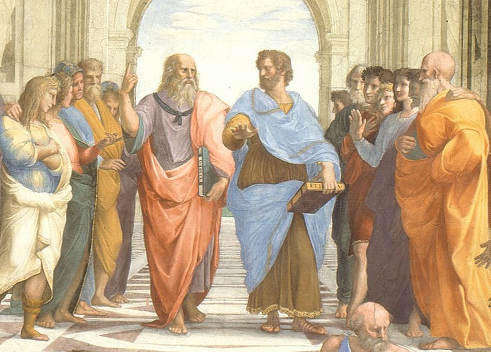

Você Sabia?

O berço da democracia: A Grécia Antiga, especialmente Atenas,
é considerada o berço da democracia. No século V a.C.,
cidadãos atenienses tinham o direito de votar e participar ativamente
nas decisões políticas da cidade, algo que era revolucionário na época.
Curiosidades
A filosofia grega: Filósofos como Sócrates, Platão e Aristóteles são conhecidos por
suas contribuições à filosofia ocidental. Sócrates introduziu a
"maiêutica" (método de questionamento para chegar à verdade),
Platão fundou a Academia, e Aristóteles estabeleceu as bases da lógica e da
ciência.Uma das figuras mais iconinas da era de ouro da Gréciaera Socrates,
que está sendo retrado na pintura ao ladotomando o calice com cicuta.